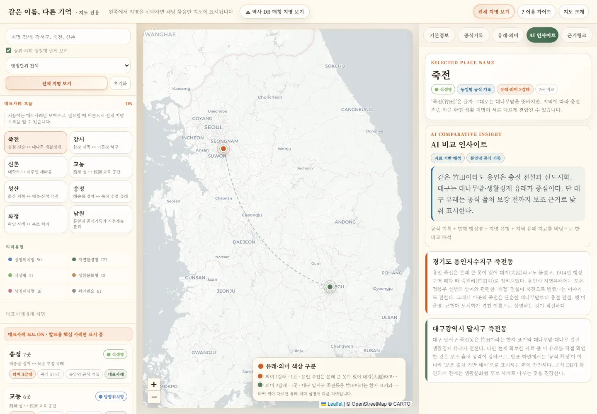
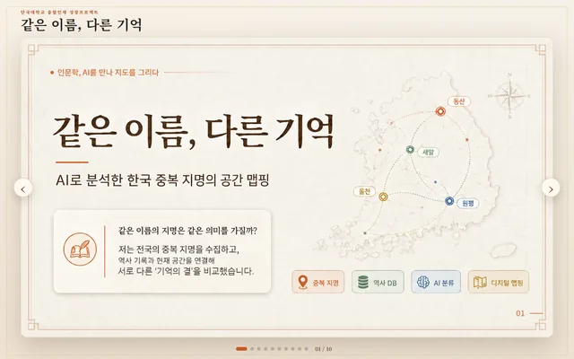
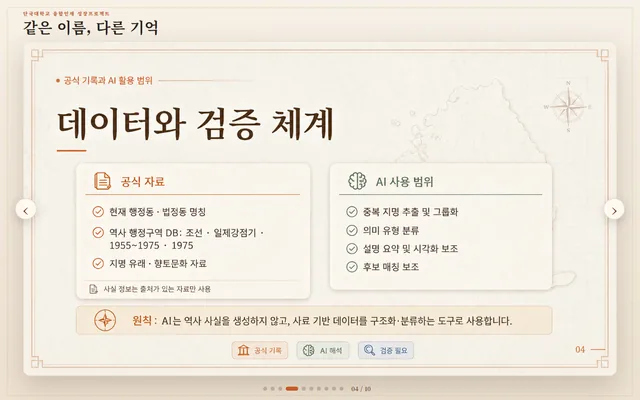
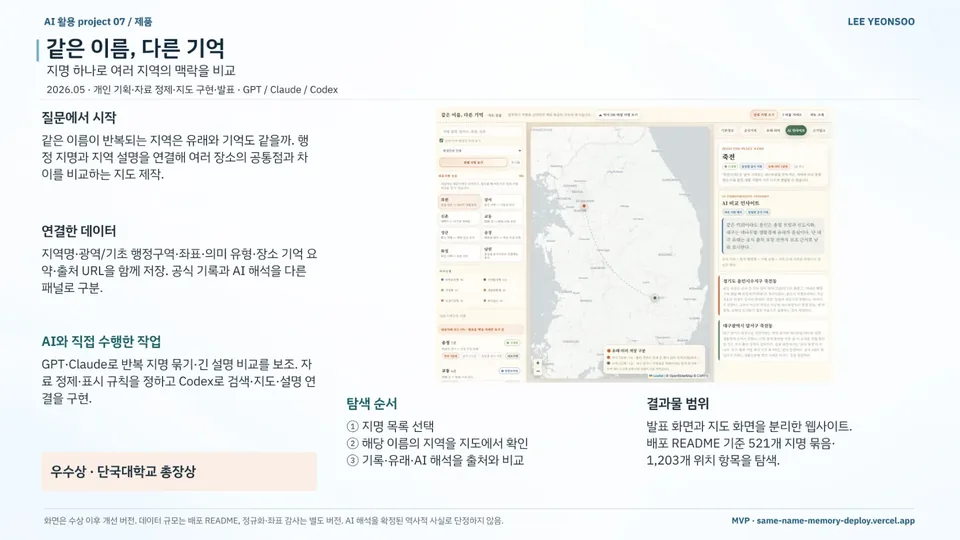
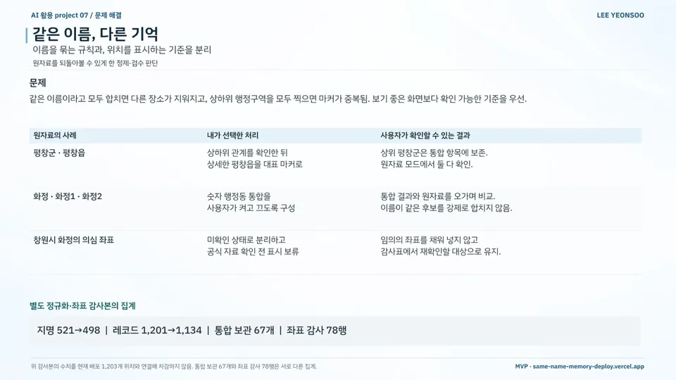

AI 서비스 기획 / MVP 구현 / 인문·지역
같은 이름, 다른 기억
Same Name, Different Memories — A Map of Repeated Place Names
지명 하나로 여러 지역의 맥락을 비교하고 공식 기록과 AI 해석을 구분한 지도
현재 상태웹사이트 배포 (수상 이후 개선 버전)
내 기여주제 기획부터 데이터 수집·정제, 중복 지명 그룹화, AI 해석 구조 설계, 좌표 검수 규칙, 발표 화면·지도 구현까지 혼자 진행했습니다.
사진·화면


크게 보기
크게 보기웹 발표 표지: AI로 분석한 한국 중복 지명의 공간 맵핑출처same-name-memory-deploy.vercel.app/pres… (새 창) 
크게 보기데이터와 검증 체계: 공식 자료와 AI 사용 범위 구분출처same-name-memory-deploy.vercel.app/pres… (새 창)


발표 자료

크게 보기포트폴리오 슬라이드 21쪽 · 본문 내용을 한 장으로 정리한 슬라이드 
크게 보기포트폴리오 슬라이드 22쪽 · 본문 내용을 한 장으로 정리한 슬라이드


문제
같은 이름의 지명도 지역마다 유래와 기억이 다르지만 일반 지도에서는 주소로만 보입니다. 같은 이름을 모두 합치면 서로 다른 장소가 지워지고, 상하위 행정구역을 모두 찍으면 마커가 겹칩니다.
접근
- 전국 행정동·법정동 기반 중복 지명 후보를 모으고 Wikidata·역사 행정구역·지명 유래 자료 연결
- 지역명·광역/기초 행정구역·좌표·의미 유형·장소 기억 요약·출처 URL을 함께 저장
- 탐색 순서: 지명 목록 선택 → 해당 이름의 지역을 지도에서 확인 → 기록·유래·AI 해석을 출처와 비교
핵심 판단
상하위 지명은 하위를 대표 마커로 표시하고 상위는 통합 항목에 보존
숫자 행정동 통합(화정·화정1·화정2)은 사용자가 켜고 끄도록 구성
의심 좌표는 임의로 채우지 않고 미확인 상태로 분리해 표시 보류
공식 기록과 AI 해석을 다른 패널로 구분
결과
- 중복 지명 묶음521개배포본
- 지도 위치 항목1,203개배포본
- 좌표 점검78행별도 정규화·점검본
- 배포본의 지명 묶음 521개·위치 항목 1,203개·상하위 관계 83쌍·출처 URL 573개
- 별도 정규화·좌표 점검본: 지명 521→498개, 레코드 1,201→1,134행, 통합 보관 67개·좌표 점검 78행
- 발표 화면과 지도 화면을 분리한 웹사이트 배포
- 우수상 · 단국대학교 총장상
AI 활용
GPT·Claude로 반복 지명을 묶고 긴 설명을 비교했습니다. Codex로 검색·지도·설명 화면을 구현하고, AI 해석은 공식 기록과 다른 패널에 두었습니다.
한계와 다음 단계
배포본(위치 항목 1,203개)과 정규화·좌표 점검본(원자료 1,201행)은 별도 버전이며, 현재 화면은 수상 후 개선본입니다. 일부 지명 유래는 추가 자료 확인이 필요합니다.